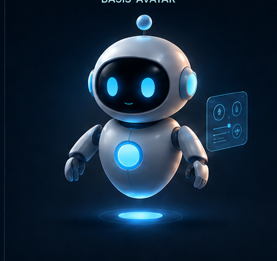

Aktiv
System arbeitet normal.
PICO Product Design System v1.0.1
Dieses Beispiel zeigt die Hierarchie aus neutralen Flächen, gezielten Statusfarben und der kanonischen PICO-Character-Referenz.

System arbeitet normal.
Eine Prüfung ist erforderlich.
Der Vorgang wurde abgeschlossen.
Der Light Mode nutzt dieselben kanonischen Tokens und verändert PICO selbst nicht.